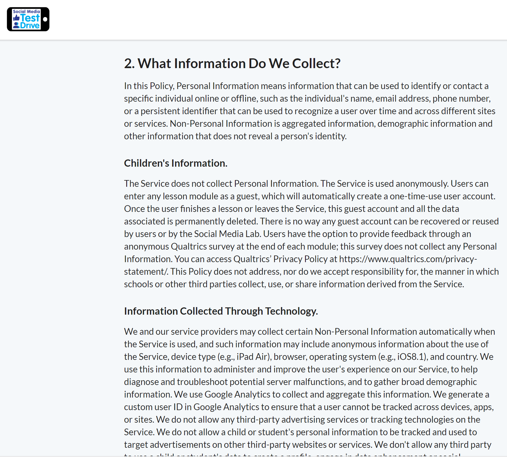

Take your children on a “Test Drive” for social media
Social Media TestDrive modules are designed so that youth can complete them by themselves, but we encourage parents to try out and discuss Social Media TestDrive with their children.


Teach your children about social media, risk-free
Each Social Media TestDrive module teaches a set of digital citizenship concepts within a safe and protected platform. Young people can practice important social media skills without worrying about negative consequences.
Learn, explore, and reflect on key concepts
Each Social Media TestDrive module has four key sections: Tutorial, Guided activity, Free play, and Reflection. There is a quiz after the learners complete the module. This design gives young people the opportunity to learn, explore, and reflect on, and assess their understanding of key social media concepts, definitions, and prosocial behaviors.
Watch this video created by Common Sense Education to learn more about the Social Media TestDrive platform and modules.
